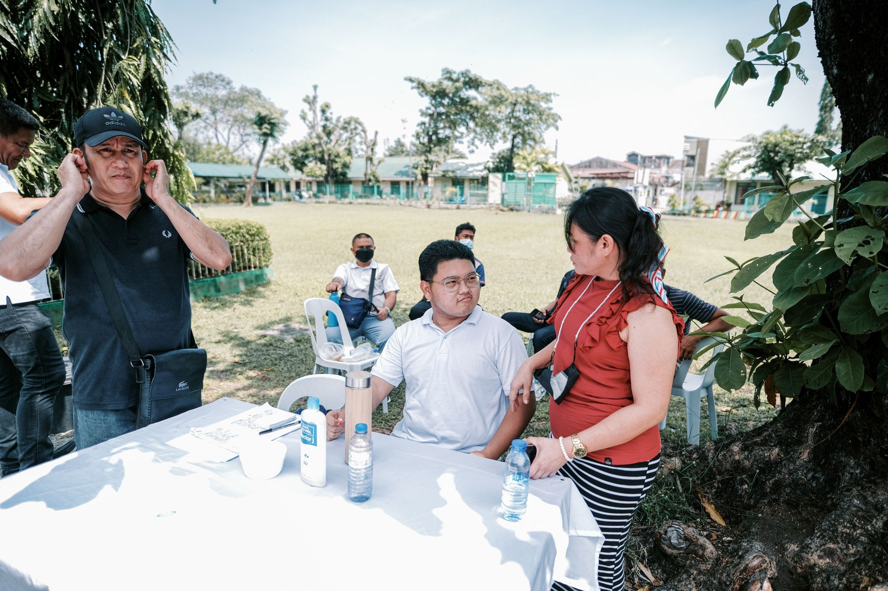
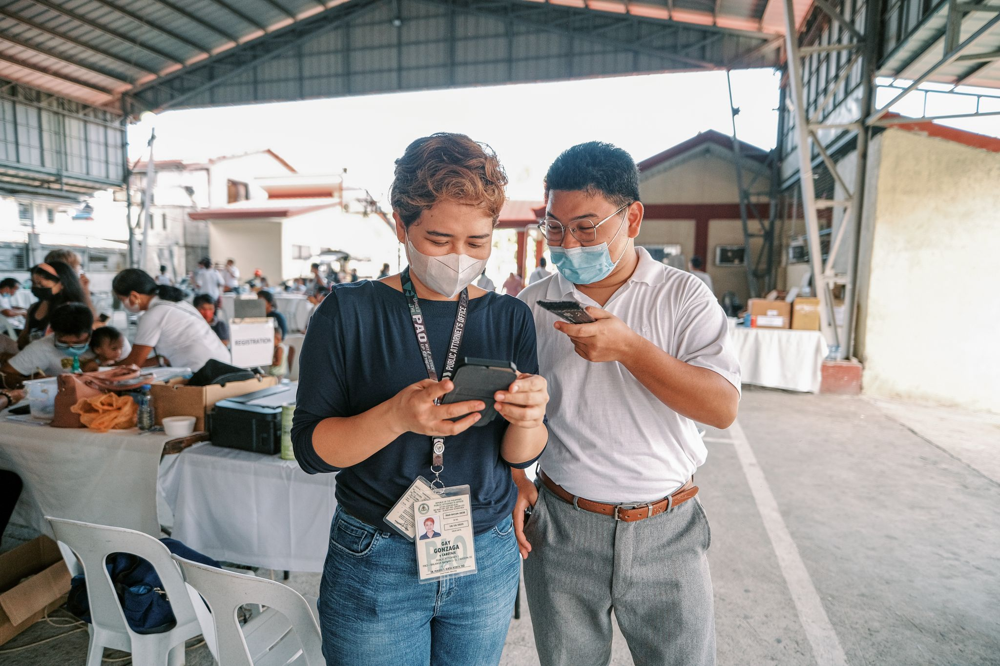
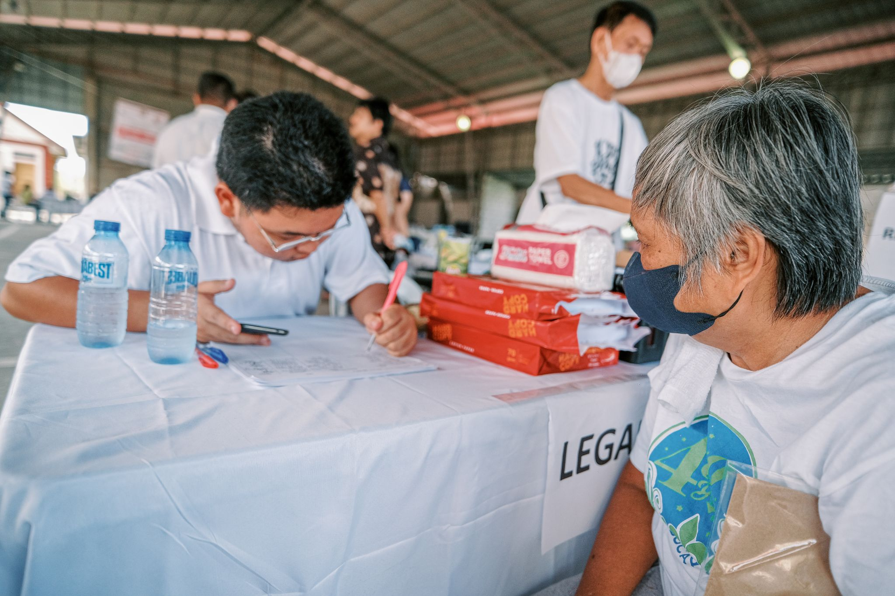

Resistance · Community & Service · Case
Legal & Medical Mission
At 22, fresh out of UP and in my first job, I helped coordinate a multi-sector legal, medical, and reproductive health mission that served communities across four towns in Bataan.
Year: 2022
Why this case matters
First job. Twenty-two years old. Four towns to serve.
I had just graduated from the University of the Philippines, where I had developed a deeper understanding of Serve the People not simply as a slogan, but as a responsibility to make knowledge, access, and relationships useful beyond oneself.
Then came my first job. I was 22 and still learning how professional environments worked, yet I found myself helping coordinate a legal, medical, and reproductive health mission involving healthcare professionals, lawyers, government agencies, local governments, hospitals, and community organizations.
We were able to serve communities in Abucay, Samal, Hermosa, and Orani. The scale made one lesson immediate: I did not need to know how to do every part of the work myself. I needed to understand how the parts could connect.
Documentary record
Coordination, on the ground.
The mission depended on translating institutional relationships into concrete service for people across four municipalities.



Case record
Young in the role, serious about the work.
- Role
- Coordinator / Collaborator
- Career stage
- First job, age 22
- Reach
- More than 1,000 people
- Towns served
- Abucay · Samal · Hermosa · Orani
- Services
- Legal, medical, and reproductive health
- Model
- Multi-sector institutional coordination
The work
Connections only matter when they become useful.
Working for a public-facing figure gave me access to relationships across institutions. I learned very quickly that proximity to influence was not the point. The real question was whether those relationships could be activated around a public need.
I could not provide medical care. I was not a lawyer. I did not run a hospital, a government agency, or a local government. What I could do was coordinate.
Who had the doctors? Who could provide legal assistance? Which local governments could mobilize residents? Who understood reproductive health? Who could provide facilities, personnel, referrals, or logistical support?
The work became an exercise in matching needs with institutions that already possessed pieces of the solution, then helping those pieces move toward the same objective.
Resistance inside the workplace
Doubt did not disappear. I stopped requiring its permission.
I was also entering a workplace where I had to navigate doubt, hierarchy, and what I experienced as office politics from people who had been there before me. Being young and newly hired meant that not everyone immediately trusted my judgment or believed I could carry work of that scale.
Strangely, that resistance grounded me. I learned to rely less on external validation and more on preparation, follow-through, and the evidence of whether the work actually moved forward.
Serve the People gave the work a direction beyond proving myself. The question was not whether I could impress people who doubted me. It was whether I could use the access, relationships, and responsibilities available to me to make something useful happen for others.
Institutional network
One public need, many kinds of expertise.
The mission brought together partners across healthcare, law, government, hospitals, and community service.
- Philippine Medical Association - Bataan Medical Society
- Local Government Unit of Abucay
- Local Government Unit of Samal
- Local Government Unit of Hermosa
- Local Government Unit of Orani
- Public Attorney's Office
- Integrated Bar of the Philippines - Bataan Chapter
- Health and Human Development Foundation
- Evangelista Medical Specialty Hospital
- Department of Health
Reflection
Access becomes more powerful when it is converted into service.
At 22, I learned that leadership can begin before age, title, or institutional acceptance seem to justify it.
I did not need to be the most experienced person in the room to contribute something essential. I needed to understand who needed to be involved, what each institution could offer, and how to help those pieces work together.
Self-belief did not mean assuming I had all the answers. It meant trusting that I could learn quickly, coordinate responsibly, and remain useful even when the room was not immediately convinced of me.
What I carry forward
Coordination is not secondary work.
People do not experience their needs in institutional silos. Medical concerns, legal questions, reproductive health, public services, and local realities can overlap in the same life.
That means access problems are sometimes made harder by the boundaries between professions and organizations. No single institution represented the entire solution. Together, they could make a wider range of services reachable.
Resistance, in this case, meant refusing to accept fragmentation as inevitable. It meant helping different institutions organize around the people they were there to serve.
My first job taught me something I have carried since: coordination is often the work that determines whether good intentions actually reach anyone.
Community → Resistance
Return to the wider engagement.
Explore Community & Service for more cases about participation, access, trust, coordination, and what communities can make possible together.
Community & Service →